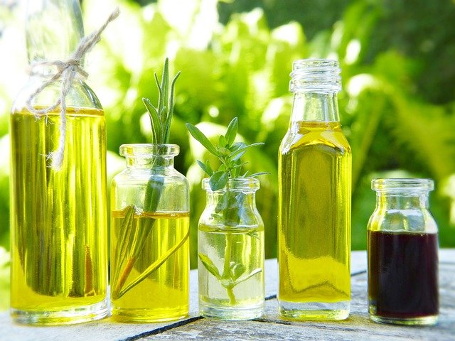
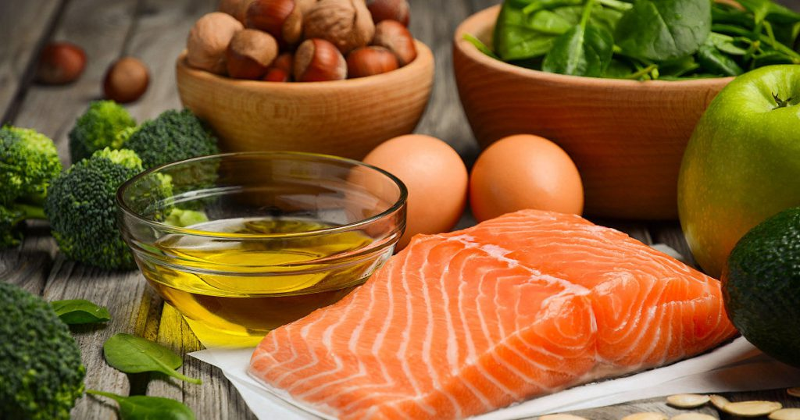

Home
Menu
Recetas
Ordenar
Quienes Somos
Reportes

Conoce los 4 aceites más saludables para cocinar
Frutas y verduras más contaminadas

Tips mas importantes de comidas saludables
Como preparar Tupper con comida saludable